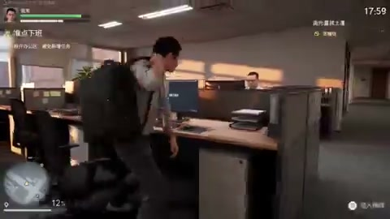
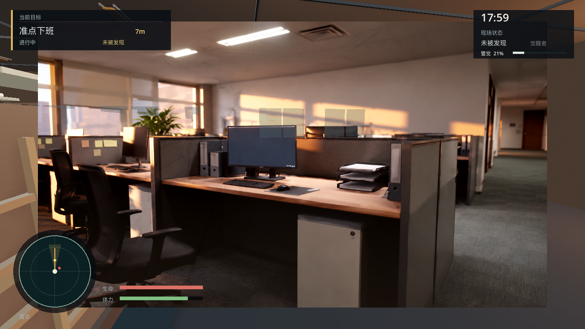
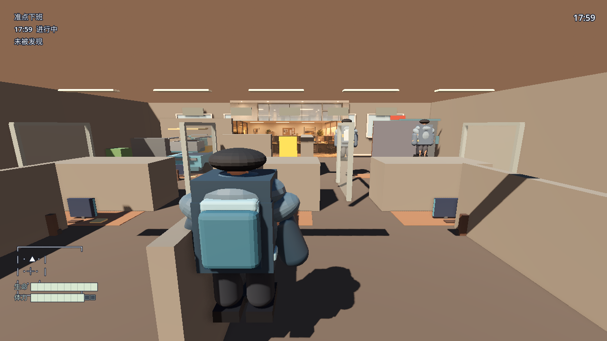
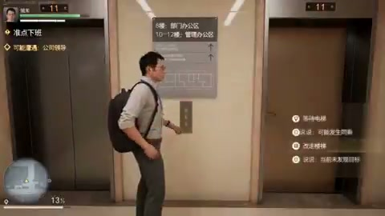
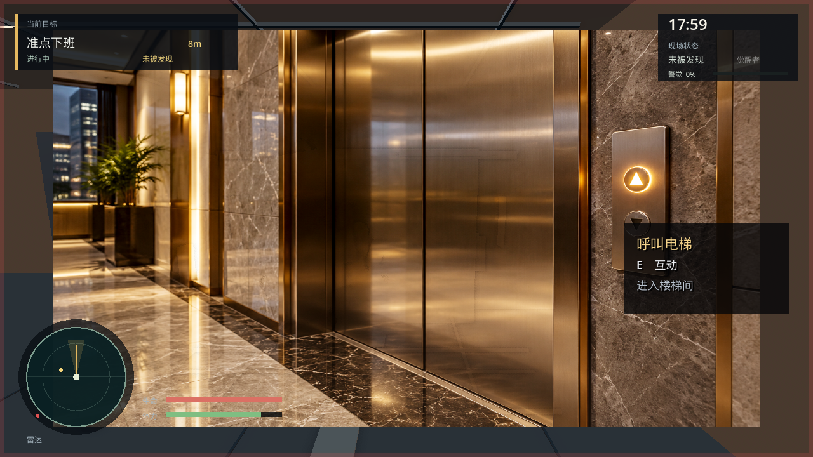
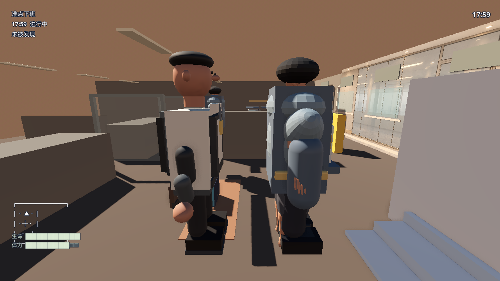

办公室 P0 环境候选视觉审阅
视觉状态：unverified 本页只审阅环境，不审阅人物、任务逻辑或 HUD。
候选环境不承担碰撞、导航和任务判定；它只作为可逆视觉层，不代表最终发布资产。
office-01：办公区结构



office-06：走廊、电梯厅和巡查路线



当前环境候选结论
- 已覆盖：工位桌面、显示器、抽屉、办公椅、玻璃隔断、电梯门、电梯面板、储物柜、绿植和顶灯。
- 已验证：候选可以通过运行时资产覆盖目录挂载，且不改变碰撞、导航、任务和存档逻辑。
- 未通过：材质仍偏程序化，办公室空间比例、灯光、玻璃反射、家具细节和参考镜头构图仍有明显差异。
- 发布边界：
release_allowed=false；必须继续完成固定镜头、目标设备和人工视觉验收。